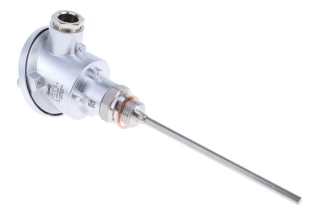

Pt100 Temperatursensoren sind Vorrichtungen, die einen Platinwiderstand enthalten, der mit dem zu messenden Element in Kontakt kommt. Es ist eine sehr zuverlässige Art von Sensor, die in der Industrie aufgrund der Stabilität des Verhältnisses zwischen Widerstand und Temperatur weit verbreitet ist. Die Widerstandskurve in Abhängigkeit von der Temperatur ist auch im Einsatzbereich recht linear.
Es gibt mehrere Werte: Der Typ Pt100 hat einen Widerstand von 100 Ohm bei 0°C und einen Proportionalitätskoeffizienten von 0,385 Ohm/°C. Mit anderen Worten, der Widerstandswert beim Aufsetzen des Sensors auf ein Objekt bei 100° C ist 138,5 Ohm (= 100 Ohm + 100 °C * 0,385).
Die Messung dieses Widerstandes stellt zwei Probleme dar: eine abgeleitet vom niedrigen Wert der Temperaturschwankungen, kombiniert mit dem Einfluss des Widerstandes der den Sensor verbindenden Drähte auf das die Messung durchführende Gerät. Die Lösung besteht darin, eine Meßschaltung zu verwenden, wie sie in Fig. 1 dargestellt ist, R1, R2 und R3 den Widerständen der die R verbindenden Drähte entsprechen.PT Sensor zur Messeinrichtung (an den Anschlüssen L1, L2 und L3) angeordnet.
.

 Abb. 1
Abb. 1
Die Werte von R1, R2 und R3 sind konstruktiv sehr ähnlich. Werden die Widerstände zwischen den Anschlüssen L3 und L2 gemessen, und dann zwischen den Anschlüssen L2 und L1, der Widerstand von RPTist der Unterschied zwischen den beiden.
Ein ähnliches Konzept wird mit dem 4-Draht-Verfahren verwendet.

Der Gedanke beruht darauf, daß jedes Spannungsmeßgerät eine hohe Impedanz (größer als 1 M Ohm) aufweist und daher bei einem bekannten Strom zwischen den Anschlüssen L1 und L4 nur ein vernachlässigbarer Teil durch L3 und L2 fließt, so daß die auf dem Voltmeter (DVM) gemessene Spannung die gleiche ist wie beim RPT terminals.
Das andere Problem ergibt sich daraus, dass Strom in das R eingeblasen wirdPTdie Messung zu nehmen erwärmt die RPT, wodurch die Messung verzerrt wird. Dieser Fehler hängt nicht nur vom Strom ab, sondern auch von den thermischen Eigenschaften des RPTund den Punkt, an dem die Messung erfolgt.
Um dieses Problem zu lösen, verwenden einige Systeme einen kurzen Stromimpulsmechanismus, um die Messung zu nehmen.